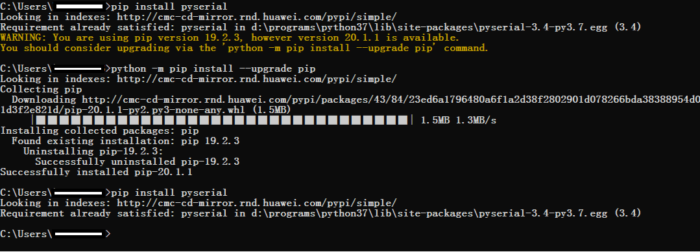

Testing Subsystem¶
Overview¶
The test-driven development mode is used during the development process. You can develop new cases or modify existing cases to test new or enhanced system features. The test helps you develop high-quality code in the development phase.
Directory Structure¶
Table 1 Directory structure of the source code for test tools
Name | Description |
|---|---|
developertest | Development test framework |
developertest/src | Test framework source code |
developertest/src/core | Test executor |
developertest/src/core/build | Test case compilation |
developertest/src/core/command | Processing of command lines entered by users |
developertest/src/core/config | Test framework configuration management |
developertest/src/core/driver | Test framework driver executor |
developertest/src/core/resource | Test framework configuration file |
developertest/src/core/testcase | Test case management |
developertest/src/core/common.py | Common operations on the test framework |
developertest/src/core/constants.py | Global constants of the test framework |
developertest/src/core/exception.py | Test framework exceptions |
developertest/src/core/utils.py | Test framework tools and methods |
developertest/src/main | Test framework platform |
developertest/src/main/main.py | Internal entrance of the test framework |
developertest/example | Test framework demo cases |
developertest/third_party | Third-party components |
developertest/BUILD.gn | Compilation configuration of the test subsystem |
developertest/start.bat | Developer test entry (Windows) |
developertest/start.sh | Developer test entry (Linux) |
Constraints¶
Test tool environment dependency
Python version: 3.7.5 or later
NFS version: V4 or later
Windows: Windows 10 or later; Linux: Ubuntu 18.04
Installation¶
Depend on the Python environment.
Install the serial port plugins pyserial and readline on the local Python, and run the pip install pyserial and sudo apt-get install libreadline-dev commands on the shell. The following figure is displayed when the installation is complete.

Compiling Test Cases¶
Test case specifications
Naming rules
The source file name of the test case must be consistent with the test suite content. The relationship between the test suite and the test case is 1:N and the test suite and the test source file is 1:1. Each source file is globally unique and named in the format of [Feature]_[Function]_[Subfunction 1]_[Subfunction 1.1]. Subfunctions can be further divided.
The file name consists of lowercase letters and underscores (_) and ends with test, for example, developertest/example/cxx_demo.
Test case coding specifications
The test cases must comply with the feature code coding specifications. In addition, necessary case description information must be added. For details, see #li2069415903917.
Test case compilation and configuration specifications
The test cases are compiled in GN mode. The configuration must comply with the compilation guide of the open source project. For details, see en-us_topic_0000001051580775.md.
Test case template
For details, see the test case demo developertest/example/cxx_demo/test/unittest/common/calc_subtraction_test.cpp.
 NOTE: Feature: Description of the tested feature
Function: Function of the tested feature SubFunction: Subfunction
of the tested feature FunctionPoints: Function points to test
EnvConditions: Environment and conditions of the feature to test
CaseDescription: Test case description step: Procedure for
executing the test case when the complex logic is tested
NOTE: Feature: Description of the tested feature
Function: Function of the tested feature SubFunction: Subfunction
of the tested feature FunctionPoints: Function points to test
EnvConditions: Environment and conditions of the feature to test
CaseDescription: Test case description step: Procedure for
executing the test case when the complex logic is testedDirectory plan for test cases
subsystem (subsystem, system component) ├── module (module) │ └── test (module test directory) │ └── unittest (unit test) │ ├── common (common test cases) │ ├── liteos (only for LiteOS core test cases) │ └── linux (only for Linux core test cases) │ └── moduletest (module test) │ ├── common │ ├── liteos │ └── linux └── test (subsystem test directory) └── unittest (unit test) ├── common ├── liteos ├── linux └── moduletest (module test) ├── common ├── liteos ├── linux NOTE: The LiteOS and Linux are used as examples only
for different device models. For the same feature on different
development boards, if the test cases are the same, they are
stored in the common directory. For the same feature, if the
test cases are used to distinguish different device models and may
include kernel differences and chip platform differences, the test
cases are distinguished by directory.Procedure for compiling test cases
Add comments to the test case header file.
Reference the gtest header file and ext namespace.
Add the header file to test.
Define test suites (test classes).
Implement specific test cases of the test suite, including test case comments and logic implementation.
Compile the test case compilation configuration.
NOTE: * Example:
developertest/example/cxx_demo/test/unittest/common/calc_subtraction_test.cpp
Notes:SetUp and TearDown are the processing logic before and after each test case in the test suite is executed.
SetUpTestCase and TearDownTestCase are the processing logic before and after all cases in the test suite are executed.
HWTEST usage: This method is applicable only to simple tests (not depending on Setup and Teardown). This method is not applicable to the scenario where multiple test scenarios require the same data configuration. The test cases may affect each other and are not independent.
Use the printf function to print logs.
Compile a test case compilation file.
Define test case compilation and building objectives.
Add comments to the test case compilation header file.
Import the test case compilation template file.
Specify the output path of the test case file.
Configure the directory contained in the test case compilation dependency.
Specify the file name generated by the test case compilation target.
Compile a specific test case compilation script and add the source files, configurations, and dependencies involved in the compilation.
Group the target test case files by condition. The group name is fixed to unittest/moduletest.
If there are multiple test suites, define the common compilation configuration.
Add test cases to the build system.
NOTE: * Example:
developertest/example/cxx_demo/test/unittest/common/BUILD.gn
Test case level definition
Basic (Level 1)
Major (Level 2)
Minor (Level 3)
Uncommon (Level 4)
Using Test Framework¶
Install the basic framework xdevice.
Open the xdevice installation directory, for example, test/xdevice in Windows.
Open the console window and run the following command:
python setup.py install
The following figure is displayed when the installation is complete.

Modify the configuration of the basic framework xdevice.
File: xdevice/config/user_config.xml
[device] # Configure the serial port information with the label IP camera, COM port, and baud rate. Example:
<device type="com" label="ipcamera"> <serial> <com>COM1</com> <type>cmd</type> <baund_rate>115200</baund_rate> <data_bits>8</data_bits> <stop_bits>1</stop_bits> <timeout>1</timeout> </serial> </device>
Modify the configuration of the developertest component.
File: resource/config/user_config.xml
[test_cases] # Specify the output path of the test case and the compilation output directory. Example:
<test_cases> <dir>S:\out\ipcamera_hi3518ev300_liteos_a\test</dir> </test_cases>
[NFS] # Specify the NFS mapping path. host_dir is the NFS directory on the PC, and board_dir is the directory created on the board. Example:
<NFS> <host_dir>D:\nfs</host_dir> <board_dir>user</board_dir> </NFS>
Check the environment before executing the test cases.
The system image and file system have been burnt to a development board and are running properly on the development board. In system mode, for example, the device prompt OHOS# is displayed during shell login.
The development host is properly connected to the serial port of the development board, and the development host is properly connected to the serial port of the development board.
The IP addresses of the development host and development board are in the same network segment and can ping each other.
An empty directory is created on the development host for mounting test cases through NFS, and the NFS service is started properly.
Run test suites.
Start the test framework and go to the test/developertest directory.
Start the test framework on Windows.
start.bat
Start the test framework on Linux.
./strat.sh
Select a device mode.
Configure device models based on the actual development board, for example, developertest/src/core/resource/config/framework_config.xml.
Run the test command.
To query the subsystems, modules, product forms, and test types supported by test cases, run the show command.
usage: show productlist Querying Supported Product Forms show typelist Querying the Supported Test Type show subsystemlist Querying Supported Subsystems show modulelist Querying Supported Modules
The following example shows how to run the test command. -t is mandatory, and -ss and -tm are optional.
run -t ut -ss test -tm example
Specify the parameters that can be used to execute the test suite corresponding to a specific feature or module.
usage: run [-h] [-p PRODUCTFORM] [-t [TESTTYPE [TESTTYPE ...]]] [-ss SUBSYSTEM] [-tm TESTMODULE] [-ts TESTSUIT] [-tc TESTCASE] [-tl TESTLEVEL] optional arguments: -h, --help show this help message and exit -p PRODUCTFORM, --productform PRODUCTFORM Specified product form -t [TESTTYPE [TESTTYPE ...]], --testtype [TESTTYPE [TESTTYPE ...]] Specify test type(UT,MST,ST,PERF,ALL) -ss SUBSYSTEM, --subsystem SUBSYSTEM Specify test subsystem -tm TESTMODULE, --testmodule TESTMODULE Specified test module -ts TESTSUIT, --testsuit TESTSUIT Specify test suit -tc TESTCASE, --testcase TESTCASE Specify test case -tl TESTLEVEL, --testlevel TESTLEVEL Specify test level
See the test framework help if needed.
The help command is used to query test commands that are supported by the test platform.
help
Exit the self-test platform.
Run the following command to exit the test platform:
quit
Test Result and Log¶
Test logs and test reports are generated after you execute test instructions in the test framework.
Test result
The test result is displayed on the console. The root path of the test result is as follows:
reports/xxxx-xx-xx-xx-xx-xx
Test case formatting result
result/
Test case log
log/plan_log_xxxx-xx-xx-xx-xx-xx.log
Test report summary
summary_report.html
Test report details
details_report.html
Test framework log
reports/platform_log_xxxx-xx-xx-xx-xx-xx.log
Latest test report
reports/latest